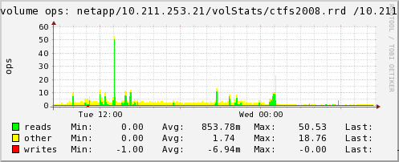

| [Login] |
Netapp boxcar (10.211.253.21) | [Home]
[RCS
Log] 2010-04-28 08:29:32 Refreshing in 29m 11s |
[Past 28 Hours] [Past Week] [Past Month] [Past Quarter] [Past Year] [Past 2 Years]
Tue 2010-04-27 08:29 - Wed 2010-04-28 08:29
| |
| |
| |
| |
|  | |
 means
there is no info to draw a graph for the selected time-period
means
there is no info to draw a graph for the selected time-period